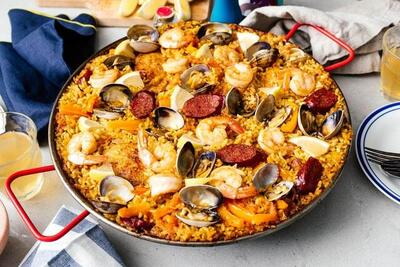

Paella

Description:
I absolutely love paella. I love what it embodies and the cultural significance behind it. What I mean by that is, the importance of gathering with others. Paella is meant to be shared and enjoyed with friends and family. Enjoying a delicious and filling meal paired with good wine and good company - there's nothing quite like it. That, and you won't eat yourself sick like you would with pasta. I wanted to include this because while it can be time-consuming, it is well worth the effort. There are many different traditional ways to make paella in different regions of spain. What us Americans, and likely other regions, picture paella with mussels, cuttlefish and/or octopus, shrimp, and sausage in a bed of rice with chopped onions and peppers. While no doubt better than the simplified version of this page, the simple version takes less time and is much more difficult to mess up.
A brief history: Spainish culture is deeply ingrained in Arabic and North African culture with the Moors once inhabiting the Iberian Penninsula. The Moors in Muslim Spain started cultivating rice around the 10th century. Given the location and culture, dishes included seafood and rich spices, which was then enjoyed with family gatherings and religious feasts. After the 15th century, cooks would customarily combine rice with beans and vegetables. This Spanish dish is a perfect illustration of the cultural union between Roman and Arab, Catholic and Muslim societies.
Ingredients:
To keep things organized and manageable, the below ingredients will be organized into what is needed for the marinade and the paella.
Marinade
- Olive oil: 2 tbsp
- Paprika: 1 tbsp
- Dried oregano: 2 tbsp
- Salt: to taste
- Black pepper: to taste
Paella
- Skinless, boneless chicken breast: 2lbs, cut into 2 inch (5 cm) pieces
- Shrimp: 1 lb - It is advized to keep the tails on while cooking to enhance the flavor. Personally, I prefer to remove the tails so I don't have to pick the shimp and remove the tails out of my plate while eating.
- Chorizo sausage: 1 lb, castings removed and crumbled
- Olive oil: 2 tbsp, divided
- Uncooked short white rice: 2 cups
- Crushed red pepper flakes: 2 tsp
- Crushed garlic: 3 cloves
- Bay leaf, large: 2
- Saffron threads: 1 pinch
- Italian parsley: 1/2 bunch, chopped
- Chicken stock: 1 qt
- Lemons medium-sized: 2, zested
- More olive oil: 2 tbsp
- Spanish onion: 1, chopped
- Medium-sized red bell pepper: 1, coarse chopped
Directions:
- Mix olive oil, paprika, oregano, salt, and pepper for marinade in a glass bowl.
- Begin paella: Add chicken and stir to coat. Cover and refrigerate until needed.
- Heat 2 tablespoons olive oil in a large skillet or paella pan over medium heat. Stir in garlic and pepper flakes, then stir in rice. Cook and stir until rice is coated with oil, about 3 minutes.
- Add saffron threads, bay leaves, parsley, chicken stock, and lemon zest. Stir until well combined and bring to a boil. Reduce heat to medium-low, cover, and simmer for 20 minutes.
- While the rice is cooking, heat olive oil in a separate skillet over medium heat. Stir in marinated chicken and cook for 3 minutes. Add onion and cook until translucent, about 5 minutes.
- Add bell pepper and sausage; cook and stir, breaking sausage up with a spatula, for 5 minutes. Add shrimp; cook and stir until shrimp are bright pink on the outside and the meat is opaque, about 2 minutes.
- Spread rice mixture onto a serving tray. Top with meat and seafood mixture.